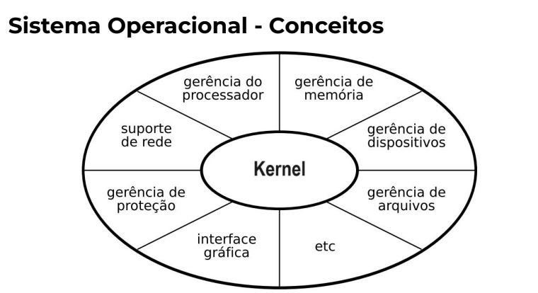
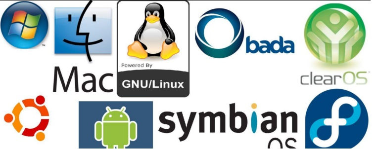

O que é?
Um sistema operacional é um software ou conjunto de softwares que desempenha um papel fundamental na administração e gerenciamento dos recursos de um sistema. Esses recursos incluem componentes de hardware, sistemas de arquivos e programas de terceiros. O sistema operacional atua como uma interface entre o computador (ou dispositivo) e o usuário.
Definição: Um sistema operacional é responsável por transformar comandos do usuário (por meio do mouse, teclado etc.) e solicitações do sistema (como gerenciamento de recursos da CPU e memória RAM) em linguagem de máquina. Ele envia essas instruções ao processador, que as traduz para código binário e executa os comandos, exibindo as respostas na tela.
O sistema operacional é uma camada de abstração que permite que os usuários interajam com o hardware sem precisar lidar diretamente com código de máquina.

Kernel
Conceito: É a parte central do sistema operacional e desempenha funções cruciais, como: Estabelecer a abstração de baixo nível com o hardware (linguagem de máquina).
Gerenciar recursos como processador, RAM, sistemas de arquivos e dispositivos de entrada/saída (monitor, teclado, mouse, impressora etc.).
Gerenciar processos de execução de programas.
Definir prioridades para o uso de dispositivos e memória do sistema.
O Kernel é a ponte entre o usuário e o hardware, gerenciando recursos e processos.
Exemplos de S/O
- Microsoft Windows: Um dos sistemas operacionais mais utilizados em computadores pessoais e laptops. Ele oferece uma interface gráfica familiar e suporta uma ampla variedade de aplicativos e programas.
- Linux: O Linux é um sistema operacional de código aberto que possui várias distribuições (como Ubuntu, Fedora e Debian). É amplamente utilizado em servidores, supercomputadores e também como uma alternativa ao Windows e macOS em computadores pessoais.
- Android: Projetado para dispositivos móveis, o Android é o sistema operacional mais usado em smartphones e tablets. Ele oferece uma ampla variedade de aplicativos e personalização para os usuários.
- iOS: Desenvolvido pela Apple, o iOS é o sistema operacional exclusivo para iPhones, iPads e iPods. Ele é conhecido por sua segurança, integração com outros dispositivos Apple e pela App Store com uma vasta seleção de aplicativos.
- macOS: Desenvolvido pela Apple, o macOS é o sistema operacional usado em computadores Mac. Ele é conhecido por sua estabilidade, design elegante e integração com outros dispositivos Apple
